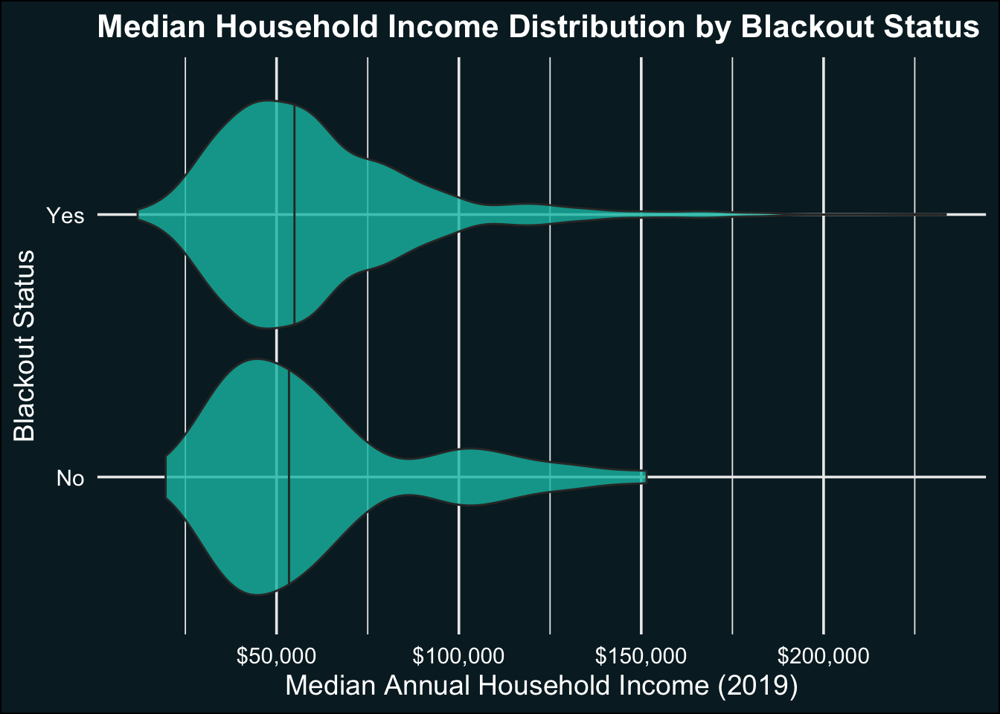

── Conflicts ────────────────────────────────────────── tidyverse_conflicts() ──
✖ tidyr::extract() masks terra::extract()
✖ dplyr::filter() masks stats::filter()
✖ dplyr::lag() masks stats::lag()
ℹ Use the conflicted package (<http://conflicted.r-lib.org/>) to force all conflicts to become errors
Display Code
library(tmap)
Breaking News: tmap 3.x is retiring. Please test v4, e.g. with
remotes::install_github('r-tmap/tmap')
Display Code
library(kableExtra)
Attaching package: 'kableExtra'
The following object is masked from 'package:dplyr':
group_rows
Display Code
library(spData)library(spDataLarge)library(here)
here() starts at /Users/nicolepepper/Documents/MEDS/eds-223/hw3-nicolelpepper
Display Code
library(viridisLite) library(terra)library(sf)
Linking to GEOS 3.11.0, GDAL 3.5.3, PROJ 9.1.0; sf_use_s2() is TRUE
Display Code
library(purrr)library(stars)
Loading required package: abind
Display Code
library(raster)
Loading required package: sp
Attaching package: 'raster'
The following object is masked from 'package:dplyr':
select
Display Code
library(dplyr)library(gifski)
Read in Project Data:
Display Code
# ---- Read in Night Light Data ----# Read in the night light raster databefore_a <-rast("data/VNP46A1/VNP46A1.A2021038.h08v05.001.2021039064328.tif") before_b <-rast("data/VNP46A1/VNP46A1.A2021038.h08v06.001.2021039064329.tif") after_a <-rast("data/VNP46A1/VNP46A1.A2021047.h08v05.001.2021048091106.tif")after_b <-rast("data/VNP46A1/VNP46A1.A2021047.h08v06.001.2021048091105.tif") # Merge the two images per time period (before & after)before_lights <-merge(before_a,before_b) after_lights <-merge(after_a,after_b) # ---- Read in Buildings and Roads Data ----# Read in buildings layerbuildings <- sf::read_sf(here::here("data","gis_osm_buildings_a_free_1.gpkg"),query ="SELECT * FROM gis_osm_buildings_a_free_1 WHERE (type IS NULL AND name IS NULL) OR type in ('residential', 'apartments', 'house', 'static_caravan', 'detached')")# Read in roads layersroads <- sf::read_sf(here::here("data","gis_osm_roads_free_1.gpkg"), query ="SELECT * FROM gis_osm_roads_free_1 WHERE fclass='motorway'") # ---- Read in Census Data ----# Read in Census geodatabase layers in separately and join geometrygeom_layer <- sf::read_sf(here::here("data", "ACS_2019_5YR_TRACT_48_TEXAS.gdb"),layer ='ACS_2019_5YR_TRACT_48_TEXAS')income_layer <- sf::read_sf(here::here("data", "ACS_2019_5YR_TRACT_48_TEXAS.gdb"),layer ='X19_INCOME')# Assign geom_layer as the geometry for the income layer geom_layer <-st_as_sfc(geom_layer)texas_census <-st_sf(income_layer, geom = geom_layer) %>% dplyr::select(id = GEOID,med_inc = B19013e1)# MEDIAN HOUSEHOLD INCOME IN THE PAST 12 MONTHS (IN 2011 INFLATION-ADJUSTED DOLLARS)# Check out the layers in the gdb, select #st_layers('data/ACS_2019_5YR_TRACT_48_TEXAS.gdb')
Inspect & Prepare Vector Data CRS
Display Code
# ---- Change CRS of Vector Data ---- # Create a vector data listvector_list <-c("buildings", "roads", "texas_census")# Transform CRS to EPSG: 3083for (i in vector_list) {assign(i, if (st_crs(get(i))$epsg !=3083)st_transform(get(i), crs =3083)elseget(i))}# # Transform CRS for raster data to EPSG: 3083# for (r in seq_along(raster_list)) {# if (inherits(raster_list[[r]], "Raster")) {# if (!compareCRS(crs(raster_list[[r]]), CRS("+init=epsg:3083"))) {# raster_list[[r]] <- projectRaster(raster_list[[r]], crs = CRS("+init=epsg:3083"))# }# }}
Warning: attribute variables are assumed to be spatially constant throughout
all geometries
Display Code
houston_census <-st_crop(texas_census, bbox_proj)
Warning: attribute variables are assumed to be spatially constant throughout
all geometries
# Generate a map of Texas blocks colored by income# tm_shape(houston_census) +# tm_fill(col = 'med_inc', palette = 'Reds')
Calculate change in lights
Display Code
# Diff in lightsdiff_lights <- before_lights - after_lights# Reclassify raster values for above and below the 200 threshold# WE COULD DO THE CLASS BRACKETING METHOD TO STREAMLINE?#diff_rcl <- diff_lights[diff_lights < 200] <- NA# ---- Create a blackout mask ---- # Reclassify raster values for above and below the 200 threshold# WE COULD DO THE CLASS BRACKETING METHOD TO STREAMLINE?rcl <-matrix(c(-Inf, 200, 1,200, Inf, 2),ncol =3, byrow =TRUE)reclassified <- terra::classify(diff_lights, rcl = rcl)# Treat as factor - IS THIS NECESSARY?values(reclassified) <-as.factor(values(reclassified))# Reclassify values below 200 to be NAreclassified[reclassified ==1] <-NA# Convert SpatRaster to polygonsdiff_poly <-as.polygons(reclassified) %>%st_as_sf()
Before and After Maps of Houston Night Lights
# ---- Crop before and after images to Houston ---- # Define Houston Boundary Extentbbox <-st_bbox(c(xmin =-96.5,xmax =-94.5,ymin =29,ymax =30.5))# Crop before and after imagesbefore_lights <-crop(before_lights, bbox) after_lights <-crop(after_lights, bbox)# ---- Define Night Light Color Palette ---- light_palette <-colorRampPalette(c("#0D0D0D", "#6C378F", "#8C206F", "#F29A2E","#FFE802", "lightyellow"))# ---- Create Before Map ---- before_map <-tm_shape(before_lights) +tm_raster(palette =light_palette(10),style ="cont",stretch ="hist",colorNA ="#011526",breaks =c(0, 9000),legend.is.portrait =FALSE,title ="Light Intensity")+tm_layout(legend.position =c(.8, 0.03),legend.text.color ="#D3DFEB",legend.show =TRUE,legend.hist.width =1,legend.format =list(digits =0),legend.title.color ="#D3DFEB",legend.title.size =1,frame =FALSE) +tm_credits("Houston, Texas", position =c(.04, 0.9),size =1.2,col ="#D3DFEB",fontface ="bold") +tm_credits("Before: 2021-02-07", position =c(.04, 0.85),size =1,col ="#D3DFEB")# ---- Create After Map ---- after_map <-tm_shape(after_lights) +tm_raster(palette =light_palette(10),style ="cont",stretch ="hist",colorNA ="#011526",breaks =c(0, 9000),legend.is.portrait =FALSE,title ="Light Intensity")+tm_layout(legend.position =c(.8, 0.03),legend.text.color ="#D3DFEB",legend.show =TRUE,legend.hist.width =1,legend.format =list(digits =0),legend.title.color ="#D3DFEB",legend.title.size =1,frame =FALSE) +tm_credits("Houston, Texas", position =c(.04, 0.9),size =1.2,col ="#D3DFEB",fontface ="bold") +tm_credits("After: 2021-02-16", position =c(.04, 0.85),size =1,col ="#D3DFEB")# ---- Combine Before and After Maps into an Animation ----maps_combo <-list(before_map, after_map) outage_animation <-tmap_animation(maps_combo, delay =300, width =600, height =600)
# tm_shape(houston_census) +# tm_polygons() +# tm_shape(diff_hwy_masked) +# tm_borders() +# tm_layout(# title = "Houston Census and Power Outage Map",# legend.outside = TRUE# )
Identify homes likely impacted by blackouts
Display Code
# ---- Select buildings that overlap with areas that experienced a blackout ---- building_blackouts <-st_intersection(diff_hwy_masked, houston_buildings)
Warning: attribute variables are assumed to be spatially constant throughout
all geometries
# ---- Crop Census Layers to Houston ---- # ---- Identify census tracts that containing buildings that experienced a blackout ---- # Get list of census tracts that contain blackout buildingscensus_blackouts <-st_intersection(houston_census, building_blackouts)
Warning: attribute variables are assumed to be spatially constant throughout
all geometries
Display Code
# Get unique census tract IDs that had blackoutsblackout_tract_ids <-unique(census_blackouts$id) # Adjust column name if different# Add a new column to the original houston_inc indicating blackout statushouston_census$blackout_status <-ifelse(houston_census$id %in% blackout_tract_ids, "Yes Blackout", "No Blackout")# tm_shape(census_blackouts) + # tm_polygons(col = "pink", border.col = "red") +# tm_layout(main.title = "Census Blackouts",# frame = FALSE)
# # Dissolve by blackout_status# houston_inc_dissolved <- houston_inc %>%# group_by(blackout_status) %>%# summarise(# total_income = sum(med_inc, na.rm = TRUE), # Replace 'income_column' with the actual income column name# avg_income = mean(med_inc, na.rm = TRUE) # Or use any other summary statistic# )
tm_shape(houston_census) +tm_polygons(col ="med_inc", palette ="Reds", title ="Median Income")
table(houston_census$blackout_status)
No Blackout Yes Blackout
361 753
Display Code
# ---- Plot Difference ---- ggplot(data = houston_census) +geom_violin(aes(x = med_inc, y = blackout_status, fill = blackout_status)) +labs(x ="Blackout Status",y ="Median Household Income",title ="Income Distribution by Blackout Status" ) +theme_minimal()
Warning: Removed 18 rows containing non-finite outside the scale range
(`stat_ydensity()`).

# palette# Dark Blues - #002129, #08295E, #011526# Dark Grey - #272D2E# Yellows - #FFE802, #FFFC71, #F2BA52# Pink - #FF2171# Purple#